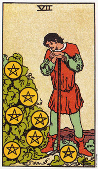

【关键词】 收成 暂停 思索
牌里的男子是一个劳动者的形象。身旁繁茂的藤叶象征他曾经付出许多的劳动。藤叶上挂着7颗星，代表丰沃的劳动果实。表情上有些疲惫，但劳有所得，一切付出是值得欣慰的。无论是这个劳动者，还是他脚下的土地，都是朴素的。象征果实的那7颗星币却无比辉煌，即是：一分耕耘一分收获，只要付出努力，任何人都有机会获得成功。往另一个角度看，劳动者站立在藤叶旁，它们不是耕作而成长，而是防碍果实的杂草，需要清理。劳动者在思考自己的能力能把它们清理干净吗?值不值得去做?收获能抵偿付出的辛苦吗?清理杂草会不会失去果实?
推测：星币七也象征一个十字路口。在日常生活中，规范实际上也有一定的连续性，开拓一个新的方向并不容易。星币七正显示一种过程改变中的形象，这不是一张终结的牌，因为游戏并未结束，所以需要时时刻刻去把握变化的现在。
星币七意味着思考未来的财务或物质状况。
星币七画了一个人，盯着一棵覆盖了许多星币的灌木(他的发财树)，而脚边也有一颗星币。他斜倚在棍棒上，正思考或梦想着他将如何处理他的这棵树。他是以钱的角度来看它的。他已经采收了一颗星币以因应他立即性的需要，并且照顾其他星币的生长，他的努力就是为了孕育果实。
星币七代表一个十字路口。在这里看不到伟大的梦想或急切的决定，因为平稳务实的努力已经可以确保农作物的丰收。王牌代表的是行动，不过现在是思考过去行动和未来计划的时候了。望着他的农作物，他可以看出来哪些行动是有用的，哪些是白费力气的。
如果他的行动是明智的，从现在开始他就会进入丰收期了。农作物可以自己圣张得很好，而他也不必在象以前一样去细心呵护它们了。这可能象征一个两性关系或一桩生意已经够稳定，不再需要不懈的努力了。现在你有机会退后一步，以较宽广的角度来看整个事情的状况了。
大体上的意义
星币七代表思考和计划未来的一段时间。你的生活或目前的状况尚称平稳，所以你有时间可以安静的计划未来的步骤。这可能包括进一步的学习、强调休闲、谨慎地经营现有财物，甚至再创另一种 事业，以补充现有的事业。花些时间多做思考吧，因为你的决定有可能对将来产生很大的影响。7表示你在问自己：“我应该往那里走呢?”以及“从今以后的五或十年，我要何去何从呢?”现在正是思考和计划未来的时候。
在有关生意的问题上，它可能暗示以项财务计划的诞生或更新。这张牌上面所画的人是以利息而非本金的投资为生。因此，只有一颗星币被去下来因应个人的消费。
正位含义：
1.目的无法实现，需要衡量问题的重要性;
2.对事物进行仔细的评估;
3.做了许多无用功;
4.因辛勤劳作而获得成功。
逆位含义：
1.付出了多余的努力或生产过剩了;
2.无知、轻率的做出决定;
3.毫无见识，愚蠢的投资;
4.努力得不到回报。
两性关系上的意义
星币七描述的是思考某段关系的一个时期。或许你们正一起计划着你们的未来，并将财务安全列入考量，作为你们长远关系的基础。
你们或许正在构思新的，以及更重要的挑战来确保你们这种伙伴关系的利益，或者假设你们目前并未拥有两性关系，或目前关系中过去阶段的时候，以决定未来可能会是何种情况。
倒立的星币七
当星币七出现倒立，它可能意味这对你目前状态的一种内在不满足，例如一个两性关系或一项事业似乎就此停滞不前。导致这个不满足的可能因素是，你没有花时间去思考何者是有用的，何者是不必要的。结果，你的情形当然是一成不变。或许你还没有了解到思考长期目标和计划的时刻已经到来，相对的，你继续工作、保持忙碌，因而丧失了思考与学习或计划的机会。
如果倒立的星币七出现在宝剑四旁边，它可能暗示你已经停下来太久了，而且你会冒着失去接触目前环境或内在需求的危险。“不要停滞不前”是所有倒立7的共同意义。别老是用老方法去做所有的事情。
这张牌可能是在说你总是用同一种方式在做很多事情，而不让自己有时间或机会去了解改变是必要的。举例而言，你可能已经把事业的规模建立起来，在一个庞大的组织当中建立了，但并没有随着它的成长来调整步伐。有可能当这项生意需要你去计划其长远的方向时，你还在那里埋头整理张册。
有时倒立的星币七是在形容一种模式，在这种模式中，你开始一项计划，但是没有留下来照顾它，使它开花结果。7倒立时，牌中的男人种了他的树之后，在还没有结出果实之前，就会转而他去。